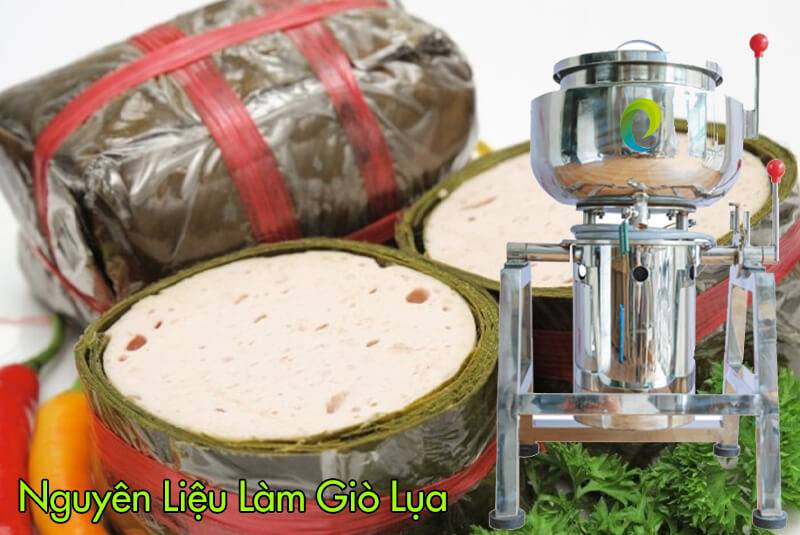

Cách làm giò lụa bằng máy xay thịt công nghiệp
Tân Minh Group
26/06/2024 13:00 11
Giò lụa là món ăn truyền thống
thơm ngon, được yêu thích trong mâm cỗ ngày Tết của
người Việt Nam. Với sự hỗ trợ
của máy xay thịt công nghiệp, việc làm giò lụa trở nên dễ dàng
và nhanh chóng hơn bao giờ hết. Bài viết này sẽ hướng dẫn bạn chi tiết
cách
làm giò lụa bằng máy xay thịt công nghiệp để bạn có
thể tự tay làm món ăn này cho gia đình và bạn bè thưởng thức.

Giới thiệu về món giò lụa truyền thống
- Nguồn gốc và ý nghĩa: Giò lụa là món ăn truyền
thống lâu đời của người Việt Nam, thường được sử dụng trong dịp Tết
Nguyên Đán, các lễ hội hoặc cỗ bàn quan trọng. Món ăn này tượng
trưng cho sự may mắn, sung túc và hạnh phúc.
- Đặc trưng của giò lụa ngon: Giò lụa ngon có màu
trắng hồng tự nhiên, thớ thịt mịn dai, vị ngọt thanh, không bị bở
hay nát. Khi ăn, giò lụa có thể cảm nhận được độ giòn dai nhẹ và
hương vị thơm ngon của thịt.
Nguyên liệu và dụng cụ cần chuẩn bị để làm giò
Nguyên liệu:
- Thịt heo: 1kg (chọn phần thịt nạc vai hoặc nạc mông, tỷ lệ mỡ -
nạc 9:1)
- Nước mắm: 3 muỗng canh
- Muối: 1 muỗng cà phê
- Đường: 1 muỗng cà phê
- Tiêu: 1/2 muỗng cà phê
- Bột ngọt: 1/2 muỗng cà phê
- Bột năng/bột bắp: 2 muỗng canh (tùy chọn)
- Đá lạnh: 100g
Dụng cụ:
- Máy xay thịt công nghiệp
- Tô, muỗng
- Màng bọc thực phẩm
- Nồi hấp
- Thớt, dao
Hướng dẫn chi tiết cách làm giò lụa bằng máy xay thịt công
nghiệp
- Sơ chế nguyên liệu:
- Rửa sạch thịt heo, loại bỏ gân, mỡ bèo.
- Cắt thịt thành miếng nhỏ, để ráo nước.
- Xay thịt:
- Cho thịt vào máy xay, xay nhuyễn lần 1.
- Thêm gia vị (nước mắm, muối, đường, tiêu, bột ngọt) và đá lạnh
vào xay lần 2 cho đến khi hỗn hợp nhuyễn mịn.
- Nếu sử dụng bột năng/bột bắp, cho vào xay cùng lần 2 để giò
lụa dai giòn hơn.
- Gói giò:
- Trải đều hỗn hợp giò lên màng bọc thực phẩm.
- Gói chặt tay, tạo hình dạng cho giò (có thể cuộn tròn, hình
trụ hoặc hình vuông).
- Hấp giò:
- Chuẩn bị nồi hấp, đun sôi nước.
- Cho giò vào hấp chín (thời gian hấp phụ thuộc vào kích thước
giò, thường khoảng 40-50 phút cho giò cỡ 1kg).
- Làm nguội và thưởng thức:
- Ngâm giò vào nước lạnh sau khi hấp chín.
- Để ráo, bảo quản lạnh và thưởng thức.
Bí quyết để có món giò lụa thơm ngon, dai giòn:
- Lựa chọn nguyên liệu tươi ngon: Thịt heo phải tươi, có màu hồng tự
nhiên, không có mùi hôi.
- Xay thịt đúng cách: Xay thịt nhuyễn nhưng không quá mịn để giò lụa
có độ dai giòn.
- Gia vị vừa ăn: Nêm nếm gia vị vừa ăn để giò lụa có hương vị thơm
ngon.
- Gói giò kỹ càng: Gói giò chặt tay để giò không bị nát khi hấp.
- Hấp giò đúng cách: Hấp giò với lửa vừa, không nên hấp quá lâu để
giò không bị bở.
Lưu ý:
- Có thể sử dụng thêm mỡ heo để giò lụa béo ngậy hơn.
- Nên sử dụng đá lạnh để xay thịt giúp giò lụa dai giòn hơn.
- Có thể thay thế bột năng/bột bắp bằng bì heo xay nhuyễn để giò lụa
dai giòn hơn.
- Giò lụa sau khi hấp chín có thể bảo quản trong tủ lạnh từ 3-5
ngày.
Social share
Bài viết liên quan
Comments
Chưa có comment.
Đề lại Comment